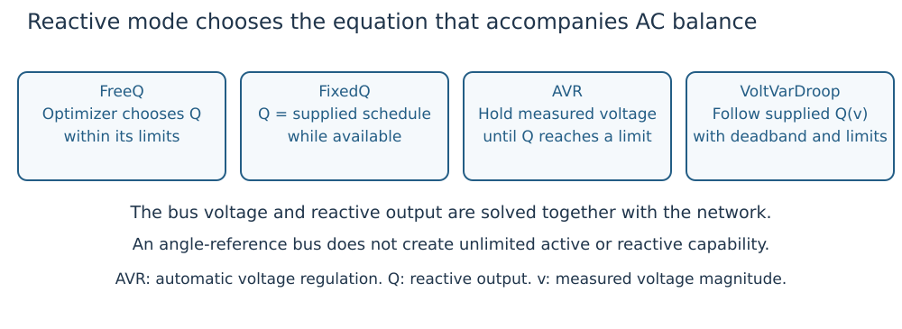

What problem are we solving?
Start with an operating point
An AC network has buses, connecting branches, generators and loads. An operating point gives each bus's voltage magnitude and angle and each generator's active and reactive output. Those numbers must satisfy AC power balance and equipment limits at the same time.
| Quantity | Symbol | Stored in |
|---|---|---|
| Bus voltage magnitude, in per unit | $v_b$ for bus $b$ | ACState.vm |
| Bus voltage angle, in radians | $\delta_b$ | ACState.va |
| Generator active output | $P_g$ for generator $g$ | ACState.pg |
| Generator reactive output | $Q_g$ | ACState.qg |
The subscript identifies a device; it is not necessarily an array position. Vectors follow the order in case.network.buses and case.generators.
Power flow finds a consistent state under prescribed operating rules. Optimal power flow (OPF) also chooses permitted operating values to minimize an explicit objective. DroopOPF's default base objective measures departure from supplied generator reference outputs; it is not an invented fuel-cost curve. See the worked example for the exact objective and its units.
A controller adds an equation
A free reactive output can move anywhere within its limits to help the optimization. A droop-controlled output must also lie on its supplied voltage/output curve. Consequently, the optimizer cannot independently choose both measured voltage and reactive output for that generator. It solves their intersection with the network.

Figure 1. Each mode determines a different relation between reactive output and the network voltage. All modes still obey availability and capability constraints.
Four reactive modes
| Mode | What it means | What can respond |
|---|---|---|
FreeQ | Reactive output is an optimization variable within limits. | The optimizer selects $Q_g$. |
FixedQ | Reactive output equals a supplied schedule. | Voltage follows the network equations. |
AVR | Automatic voltage regulation holds a supplied measured-voltage target while reactive capability permits. | $Q_g$ changes; at a reactive limit, voltage regulation releases. |
VoltVarDroop | Reactive output follows a supplied deadband/saturated curve of measured voltage. | $Q_g$ and voltage move together along the curve. |
An explicit ReactiveControlAssignment names the mode for a generator. Legacy GeneratorControlAttachments connect generators to entries in case.controls. A generator without a legacy droop attachment defaults to FreeQ; the presence of a generator alone does not create a droop or an AVR controller.
The regulated location can be a local bus, a remote bus or a supported branch terminal. It says where voltage is measured. It does not relocate the generator's power injection. Learn the data contract in the data model.
Dispatch, response and design are three decisions
| Decision | Example | How it is represented |
|---|---|---|
| Preventive dispatch | Choose generator outputs before an outage. | Base AC state. |
| Automatic response | Surviving generators adjust active output, or a fixed reactive curve produces a new equilibrium. | Declared inter-scenario policy and unchanged controller law. |
| Controller/equipment design | Select one slope, reference, tap or bank susceptance within specified bounds. | Selected design parameters and their sharing/timing rules. |
A fixed droop curve can give different reactive outputs at different operating points. That is response, even though the curve itself has not been redesigned. A designed curve is shared across the declared training conditions; testing a new condition should freeze it according to the evaluation policy.
Security and time add different kinds of coupling
A contingency is a declared loss of a line, transformer or generator. Security-constrained OPF (SCOPF) finds a base operating point with acceptable states for its declared outages and response/control policy. An $N-1$ study considers individual device losses; it must state which devices and islanding conditions are actually covered.
Several demand scenarios are alternative operating conditions. Several periods are ordered operating points with durations and, when supplied, dispatch-ramp constraints. Outage alternatives at a period are not a chronological simulation of the outage. See the scenario/time diagram.
What a successful result establishes
Native solver convergence and independent physical/policy replay are both needed. They support the particular modeled equilibrium and declared conditions. Local nonlinear optimization does not establish a global optimum. Steady-state feasibility does not establish transient stability, frequency response, a device switching trajectory or discrete tap/bank implementability.